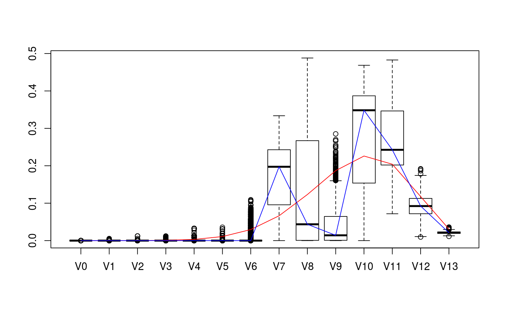
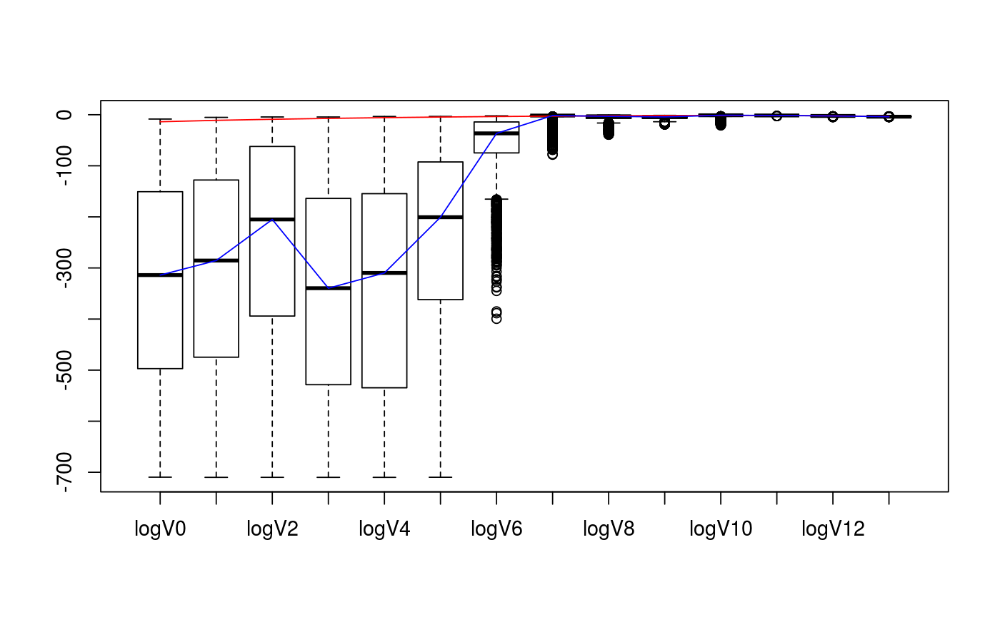

estim_stan generates inputs for Stan (data list and model string or external file)
for sampling from the posterior distribution,
given samples of the bivariate chi-bar-squared distribution.
estim_stan(samples, d, dimC = d, linC = 0, enforce_logconc = FALSE, v_prior = NA, prior_sample_size = 1, prior = "noninformative", filename = NA, overwrite = FALSE)
| samples | N-by-2 matrix representing independent samples from the bivariate chi-bar-squared distribution of a convex cone |
|---|---|
| d | the dimension of the ambient space |
| dimC | the dimension of the cone |
| linC | the lineality of the cone |
| enforce_logconc | logical; determines whether a model that enforces log-concavity shall be used |
| v_prior | a prior estimate of the vector of intrinsic volumes (NA by default) |
| prior_sample_size | the sample size for the prior estimate (1 by default -> noninformative) |
| prior | either "noninformative" (default) or "informative" (only used if enforce_logconc==TRUE) |
| filename | filename for output (NA by default, in which case the return is a string) |
| overwrite | logical; determines whether the output should overwrite an existing file |
If filename==NA then the output of estim_stan is a list containing the following elements:
model: a string that forms the description of the Stan model,
data: a data list containing the prepared data to be used
for defining a Stan model object,
If filename!=NA then the model string will be written to the file with
the specified name and the output will only contain the elements data
and variable.names.
If enforce_logconc==TRUE then the prior distribution is taken on the
log-concavity parameters (second iterated differences of the logarithms of the intrinsic volumes),
which enforces log-concavity of the intrinsic volumes.
See the example below for details on how to use the outputs with rstan functions; see this vignette for further info.
Package: conivol
library(rstan)#>#>#> #> #>#> #>#> #> #>#> #> #># defining the example cone D <- c(5,8) alpha <- c( asin(sqrt(0.9)) , asin(sqrt(0.8))) v_exact <- circ_ivols(D, alpha, product = TRUE) d <- sum(D) # getting the sample data N <- 10^3 set.seed(1234) m_samp <- rbichibarsq(N,v_exact) # compute initial guess est <- estim_statdim_var(d, m_samp) v0 <- init_ivols(d,init_mode=1,delta=est$delta,var=est$var) # obtain input data for Stan model; use v0 as prior filename <- "ex_stan_model.stan" staninp <- estim_stan(m_samp, d, prior="informative", v_prior=v0, filename=filename) # run the Stan model stanfit <- stan( file = filename, data = staninp$data, chains = 4, warmup = 1000, iter = 2000, cores = 2, refresh = 200 )#> In file included from /home/damlunx/R/x86_64-pc-linux-gnu-library/3.4/BH/include/boost/config.hpp:39:0, #> from /home/damlunx/R/x86_64-pc-linux-gnu-library/3.4/BH/include/boost/math/tools/config.hpp:13, #> from /home/damlunx/R/x86_64-pc-linux-gnu-library/3.4/StanHeaders/include/stan/math/rev/core/var.hpp:7, #> from /home/damlunx/R/x86_64-pc-linux-gnu-library/3.4/StanHeaders/include/stan/math/rev/core/gevv_vvv_vari.hpp:5, #> from /home/damlunx/R/x86_64-pc-linux-gnu-library/3.4/StanHeaders/include/stan/math/rev/core.hpp:12, #> from /home/damlunx/R/x86_64-pc-linux-gnu-library/3.4/StanHeaders/include/stan/math/rev/mat.hpp:4, #> from /home/damlunx/R/x86_64-pc-linux-gnu-library/3.4/StanHeaders/include/stan/math.hpp:4, #> from /home/damlunx/R/x86_64-pc-linux-gnu-library/3.4/StanHeaders/include/src/stan/model/model_header.hpp:4, #> from file9fb4764f97c.cpp:8: #> /home/damlunx/R/x86_64-pc-linux-gnu-library/3.4/BH/include/boost/config/compiler/gcc.hpp:186:0: warning: "BOOST_NO_CXX11_RVALUE_REFERENCES" redefined #> # define BOOST_NO_CXX11_RVALUE_REFERENCES #> ^ #> <command-line>:0:0: note: this is the location of the previous definition #> cc1plus: warning: unrecognized command line option ‘-Wno-macro-redefined’#> Warning: There were 3470 divergent transitions after warmup. Increasing adapt_delta above 0.8 may help. See #> http://mc-stan.org/misc/warnings.html#divergent-transitions-after-warmup#> Warning: Examine the pairs() plot to diagnose sampling problems# remove Stan file file.remove(filename)#> [1] TRUE# compare posterior median with true values v_est_med <- apply(extract(stanfit)$V, 2, FUN = median) v_est_med / v_exact#> [1] 4.093364e-131 6.187258e-120 6.576052e-86 4.231690e-145 9.351866e-133 6.727369e-86 4.804083e-15 2.973739e+00 3.543397e-01 7.572611e-02 1.541146e+00 1.188707e+00 7.836341e-01 #> [14] 6.851792e-01sum( (v_est_med-v_exact)^2 )#> [1] 0.07157305# display boxplot of posterior distribution, overlayed with true values data <- as.data.frame( extract(stanfit)$V ) colnames(data) <- paste0(rep("V",d+1),as.character(0:d)) boxplot( value~key, tidyr::gather( data, factor_key=TRUE ) )lines(1+0:d, v_exact, col="red")lines(1+0:d, v_est_med, col="blue")# display boxplot of posterior distribution of logs, overlayed with true values data <- as.data.frame( extract(stanfit)$logV_nonz ) colnames(data) <- paste0(rep("logV",d+1),as.character(0:d)) boxplot( value~key, tidyr::gather( data, factor_key=TRUE ) )lines(1+0:d, log(v_exact), col="red")lines(1+0:d, log(v_est_med), col="blue")